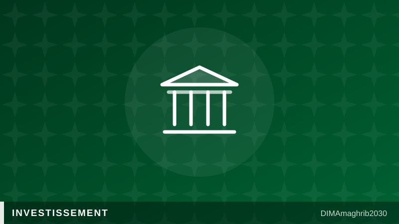

42 milliards de DH de nouveaux investissements validés : le Maroc accélère sur l'automobile, l'aéronautique et le textileMorocco Greenlights 42 Billion MAD in New Investments Across EVs, Aerospace and Textiles

Le Maroc vient d'injecter une nouvelle dose d'optimisme dans son économie. Réuni le 3 juillet 2026, le 11e Comité national des investissements a validé 29 nouveaux accords d'investissement pour un montant proche de 42 milliards de dirhams, soit environ 3,93 milliards d'euros, auxquels s'ajoutent neuf avenants à des conventions existantes. Selon les chiffres relayés par APAnews, ces projets devraient générer près de 9 800 emplois, dont 2 400 postes directs et 7 400 indirects, un signal fort envoyé aux investisseurs internationaux à un moment charnière pour le royaume.
L'automobile, l'aéronautique et le textile en tête d'affiche
Parmi les 29 projets approuvés, trois initiatives stratégiques se distinguent particulièrement : elles concernent les véhicules électriques, l'industrie aéronautique et le textile, des secteurs déjà identifiés comme piliers de la diversification industrielle marocaine. Ces investissements se répartissent sur quatre régions du royaume — Casablanca-Settat, Rabat-Salé-Kénitra, Fès-Meknès et Tanger-Tétouan-Al Hoceïma — confirmant la volonté d'irriguer l'ensemble du territoire plutôt que de concentrer la croissance sur un seul pôle économique. Ce choix géographique traduit une ambition claire : faire du Maroc un hub industriel régional pour l'automobile et l'aéronautique, deux filières où le pays a déjà construit une réputation solide auprès des constructeurs mondiaux.
Le Premier ministre Aziz Akhannouch a profité de la réunion du comité pour dresser un bilan d'étape de la Charte de l'investissement, entrée en vigueur il y a trois ans. Selon ses propos rapportés par APAnews, ce cadre a permis la signature de 391 accords d'investissement pour un montant cumulé de 520 milliards de dirhams, une trajectoire qui place le Comité national des investissements Maroc au cœur de la stratégie économique nationale.
Un momentum renforcé par les partenaires européens
Cette dynamique locale s'accompagne d'un intérêt croissant des institutions financières européennes. La Banque européenne d'investissement prévoit de canaliser plus de 700 millions d'euros vers le Maroc en 2026, un engagement rapporté par Morocco World News qui illustre la confiance persistante des bailleurs de fonds européens malgré un contexte économique mondial incertain. Ce financement de l'EIB Morocco funding vient s'ajouter aux efforts diplomatiques récents, notamment la Journée économique France-Maroc organisée à Paris le 2 juillet 2026, où le potentiel d'investissement du royaume a été mis en avant, selon Maroc.ma, pour stimuler les investissements croisés entre les deux pays.
Le frein persistant du statut de marché frontière
Malgré ces avancées, un obstacle continue de peser sur l'attractivité marocaine aux yeux des investisseurs institutionnels : le Maroc reste classé comme "marché frontière" dans la revue MSCI Global Market Accessibility 2026. Morocco World News souligne que cette classification s'explique notamment par un accès limité à l'information en anglais et par certaines restrictions liées aux règles de change. Pour un pays qui multiplie les accords d'investissement Maroc juillet 2026 et affiche des ambitions industrielles fortes, ce statut MSCI frontier market Morocco constitue un paradoxe que les autorités devront résoudre pour convaincre pleinement les marchés financiers internationaux. La Charte de l'investissement Maroc a prouvé sa capacité à attirer des capitaux, mais la reconnaissance des agences de notation de marché reste, elle, encore à conquérir.
Morocco has just delivered a fresh jolt of economic momentum. Meeting on July 3, 2026, the country's 11th National Investment Committee approved 29 new investment agreements worth nearly 42 billion MAD, roughly €3.93 billion, alongside nine amendments to existing agreements. According to figures reported by APAnews, the projects are expected to generate close to 9,800 jobs, split between 2,400 direct positions and 7,400 indirect ones, a strong signal to international investors at a pivotal moment for the kingdom.
EVs, aerospace and textiles take center stage
Among the 29 approved projects, three strategic initiatives stand out: they target electric vehicles, aerospace and textiles, sectors already recognized as pillars of Morocco's industrial diversification push. The Morocco EV investment push, together with the aerospace and textile deals, is spread across four regions — Casablanca-Settat, Rabat-Salé-Kénitra, Fès-Meknès and Tanger-Tétouan-Al Hoceïma — underscoring a deliberate effort to spread growth nationwide rather than concentrate it in a single hub. That geographic spread points to a clear ambition: positioning Morocco as a regional industrial base for cars and aircraft parts, two fields where the country has already built credibility with global manufacturers, particularly through its growing Morocco aerospace industry footprint.
Prime Minister Aziz Akhannouch used the committee meeting to take stock of the Investment Charter, now three years into its rollout. As quoted by APAnews, he noted the framework has enabled 391 signed investment agreements worth a cumulative 520 billion MAD, a trajectory that places the national investment committee at the center of Morocco's economic strategy.
European partners add fuel to the momentum
This domestic push is being matched by growing interest from European financial institutions. The European Investment Bank plans to channel more than €700 million into Morocco in 2026, according to Morocco World News, a commitment that reflects continued confidence from European lenders despite a shaky global economic backdrop. This EIB Morocco funding builds on recent diplomatic groundwork, including the France-Morocco Economic Day held in Paris on July 2, 2026, where Morocco's investment appeal was showcased, as reported by Maroc.ma, to encourage more cross-investment between the two countries.
The frontier market label still holds Morocco back
Despite this progress, one obstacle keeps weighing on Morocco's appeal to institutional investors: the kingdom remains classified as a "Frontier Market" in the 2026 MSCI Global Market Accessibility Review. Morocco World News points to limited English-language information and currency-related restrictions as key factors behind the ranking. For a country racking up new investment agreements and projecting strong industrial ambitions, the MSCI frontier market Morocco status is something of a paradox that authorities will need to address to fully win over global financial markets. The Investment Charter has proven it can attract capital, but earning full recognition from ratings agencies remains the next hurdle.